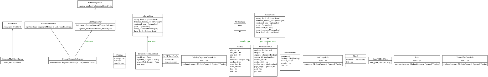

Class Diagram¶
This diagram is mechanically derived from the codebase.

This diagram represents the core architectural model of the system. It is organized as a set of layered components, each responsible for a single stage in the transformation of a novel from raw text into a validated narrative specification.
At the lowest level is the structural model:
Novelis a container for a sequence ofModuleobjects.- A
Modulerepresents a contiguous section of the source text along with its structural metadata: chapter, title, type, line range, and text anchors.
Modules are intentionally minimal. They do not contain semantic interpretation or narrative meaning. This keeps the parsing process deterministic and reliable. Any logic related to interpretation is deliberately excluded from this layer.
The next layer introduces semantic representation:
- Each
Moduleis converted into aModuleContract. - A
ModuleContractrepresents the intended narrative effect of that module rather than its textual content.
A contract links three things:
- The identity and location of the module
- The reader’s state before the module
- The reader’s state after the module
Reader state is modeled using the ReaderState class, which captures dimensions such as:
- genre expectation
- power balance
- emotional tone
- threat level
- agency level
- dominant fantasy or reader-response category
This layer provides a formal, inspectable representation of reader response. It allows narrative impact to be treated as structured data rather than informal interpretation.
The behavior of the system is defined by a small set of abstractions:
NovelParserdefines the interface for converting raw text into structured modules.CommonMarkNovelParseris the current implementation for Markdown input.- Additional parsers can be introduced without affecting contract generation or assessment.
For semantic inference:
ContractInferencerdefines the interface for systems that populate contracts automatically.OpenAIContractInferenceris one concrete implementation that uses an LLM.- The LLM client is isolated behind a separate adapter to prevent semantic logic from leaking into structural code.
For evaluation:
- Each validation rule is implemented as a
Ruleobject. - A rule evaluates a
ModuleContractand returns aFindingif a condition is violated. - The
Assessorapplies all rules to all contracts and aggregates the results into a report.
Conceptually, the system consists of three layers:
Structure
- Novel
- Module
- Parser
Semantics
- ModuleContract
- ReaderState
- Inferencer
Evaluation
- Rule implementations
- Findings
- Assessment reports
Dependencies flow strictly downward through these layers. No semantic or evaluation logic is allowed to influence parsing or raw structure. This separation ensures that each component remains testable, replaceable, and independently maintainable.
Operationally, the system follows this progression:
Text → Structure → Contract → Assessment → Report
This design allows the novel to be treated as an executable specification: structure is parsed, intent is declared or inferred, and outcomes are validated.
From a maintenance perspective:
- Structural bugs belong in the parser or models.
- Serialization or specification issues belong in the contracts package.
- Incorrect narrative judgments belong in the rules or assessor.
- Semantic extraction issues belong in the inference layer.
The diagram reflects this separation clearly and is intended to remain stable as the system evolves.